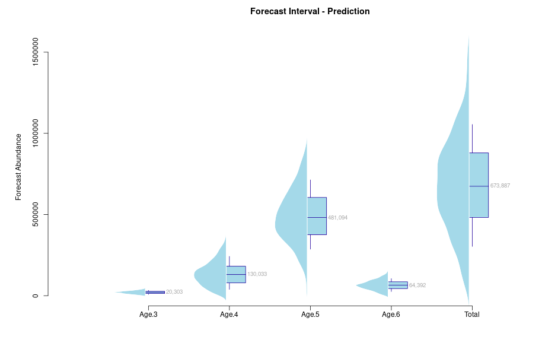

Forecasting Meziadin Sockeye Returns
November 22, 2024
Summary - Meziadin Sockeye Run
The Meziadin River is a major tributary to the Nass River in northwestern British Columbia, an important area home to five species of Pacific salmon. Sockeye salmon returning to the Meziadin system comprise a significant proportion of the total Nass sockeye run. Since the creation of the Meziadin Fishway in 1966, it has been found that 70-80% of Nass sockeye return to the Meziadin system via the Meziadin River. Meziadin sockeye are a highly valued and culturally significant food source for Gitanyow and Nisga’a First Nations, and also harvested in Alaskan commercial fisheries during their ocean migration.
Predicting the sockeye returning to the Meziadin is important for understanding the conservation status of this population. We are working to create a Meziadin-specific return forecast for sockeye salmon using the ForecastR tool.
Total return of Meziadin sockeye by age class, 1982-2023
Using ForecastR to predict Sockeye Returns
We are using ForecastR, an R package and Shiny app, to predict total returns of sockeye salmon from the Meziadin system based on previous years’ data on Meziadin total return and escapement. The Meziadin total return data is a subset of the Nass total return, including escapement plus the salmon harvested in fisheries which do not make it back to spawning grounds. The sockeye total run numbers for each year are categorized by age, with sockeye separated into age classes 3, 4, 5, and 6.
ForecastR uses forecasting models to predict salmon terminal run and escapement, based on data entered by the user. This data can be age-specific and include environmental or biological covariates. Multiple forecasting models can be explored, compared, and ranked using the app. Here we have started forecasting Meziadin sockeye total return using ages with no covariates, and intend to add relevant environmental and/or biological covariates to make these predictive models more informative in the future. Plots shown are using the exponential smoothing model, which assigns exponentially decreasing weights to past observations (i.e. more recent data points are more important for forecasting), and captures seasonal variation.
Observed vs fitted return numbers using Naive model for Age Class 3
Data for age-3 sockeye is sparse as the total run for this age class is zero for most years between 1982 and 2017.
Plot of observed vs fitted return numbers using Naive model for Age Class 4
Observed vs fitted return numbers using Naive model for Age Class 5
Observed vs fitted return numbers using Naive model for Age Class 6
Forecast plot showing the distribution of forecasted return estimates by age

References
Nisga’a Lisims Government. 2023. 2023 Nass River Salmon Stock Assessment Update - Friday, 14 July. Public update from the Nisga’a Lisims Government Fisheries and Wildlife Department.
Pacific Salmon Foundation. 2016. The Nass Area: Cumulative Pressures on Salmon Habitat (summary report cards), Vancouver, BC.
Vélez-Espino, L.A., Parken, C.K., Clemons, E.R., Peterson, R., Ryding, K., Folkes, M., and Pestal, G. 2019. ForecastR: tools to automate procedures for forecasting of salmonid terminal run and escapement. Final Report submitted to the Southern Boundary Restoration and Enhancement Fund, Pacific Salmon Commission, Vancouver BC. 117 p.